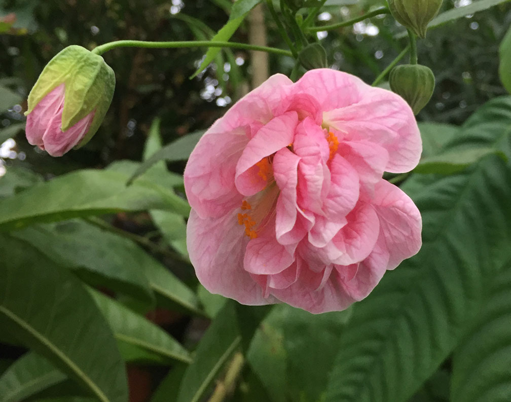

Abutilon 'Victorian Lady' - Description
About Abutilon 'Victorian Lady'
Abutilon 'Victorian Lady' is a beautiful flowering shrub known for its delicate, bell-shaped flowers in shades of pink, yellow, and red. It's a great addition to any garden or indoor space, offering a touch of elegance and vibrant color throughout the year.
Care Instructions
- Light: Prefers bright, indirect sunlight
- Watering: Keep the soil consistently moist but not waterlogged
- Temperature: Thrives in temperatures between 60-75°F (15-24°C)
- Humidity: Likes a humid environment, so occasional misting may be beneficial
Price: $45
If you're interested in purchasing Abutilon 'Victorian Lady', please contact us or order online.
Back to Catalog